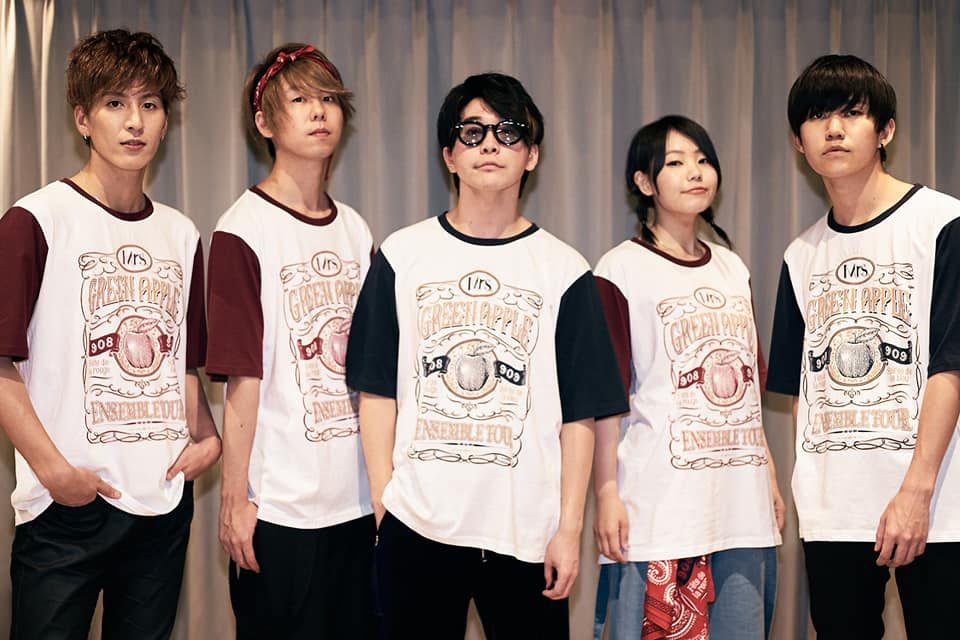
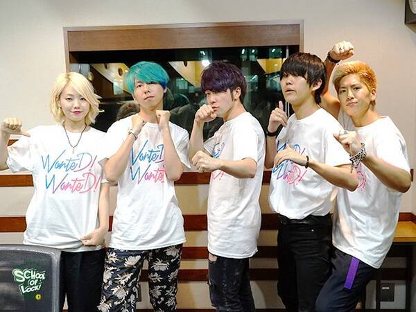
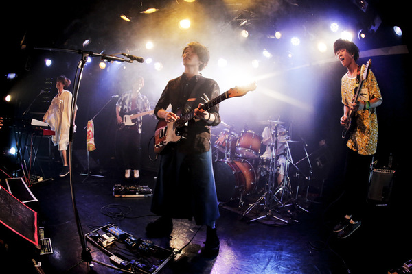
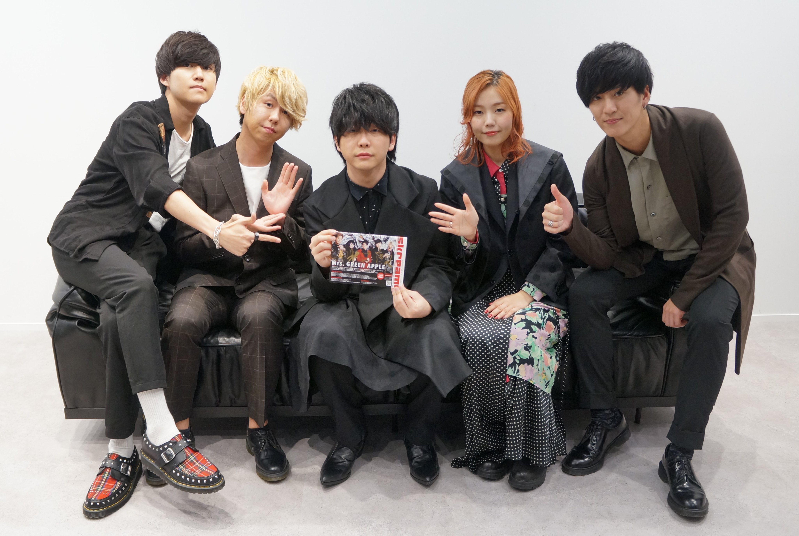
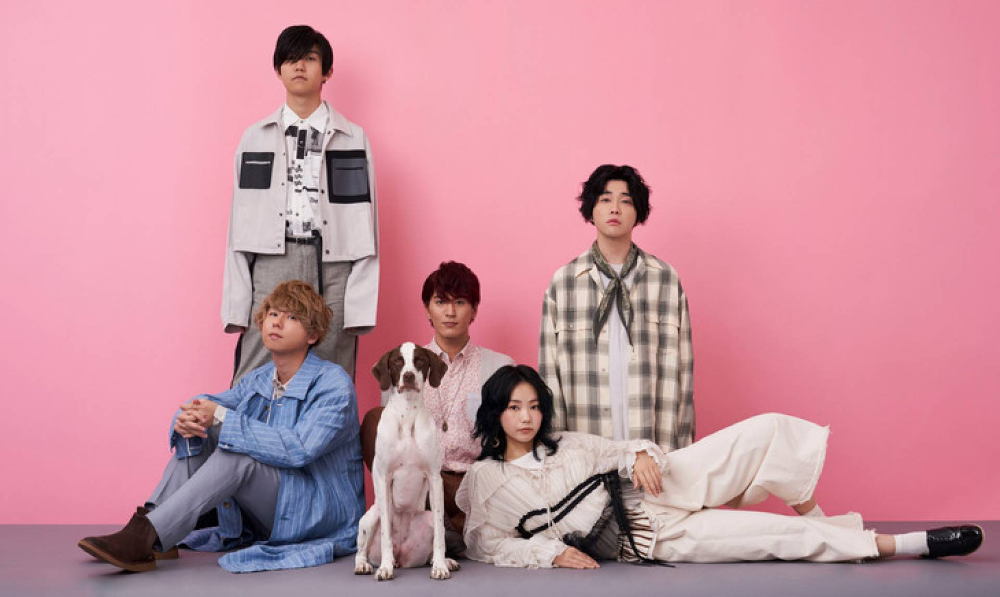
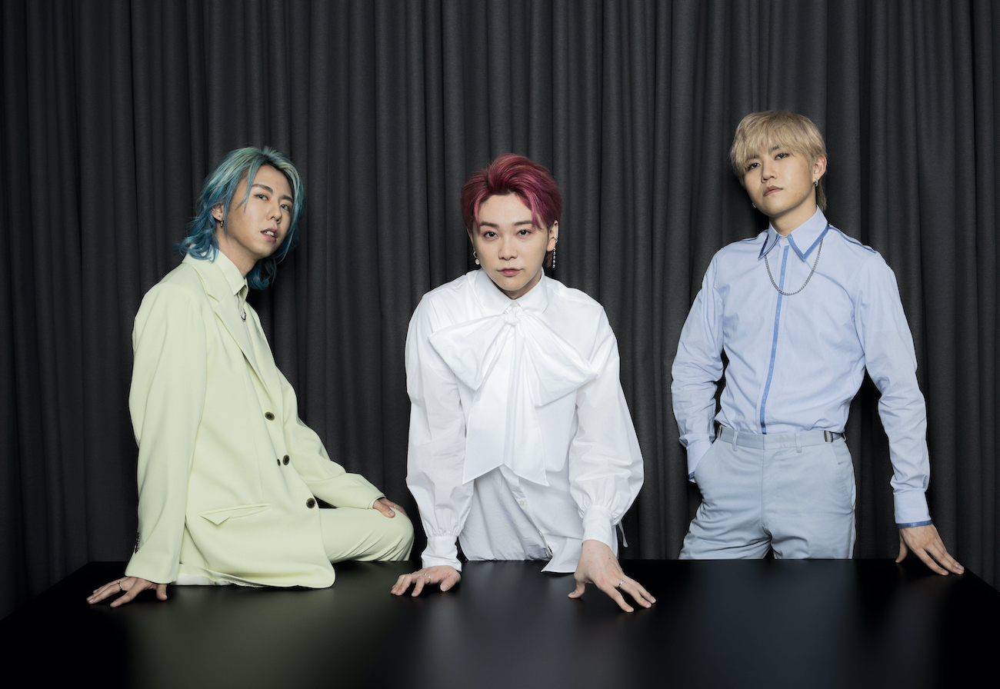

Motoki Ohmori（Vo. Gt.）
Hiloto Wakai（Gt.）
Ryoka Fujisawa（Kb.）
Mrs. GREEN APPLE has formed a group in 2013, and debuted from EMI Records on July 8th, 2015 with a mini album, “Variety”.
Since then, they have released an original album every year and continue to hold concerts. From December 2019 , they hold their first arena tour “Eden no Sono” and sold out all tickets to over 80 thousands people.
On July 8th, 2020, on the day of 5th anniversary since their major debut, they released their first best album “5”, and ranked #1 on the Oricon weekly combined chart and the Billboard Album Chart. ending of their “phase 1”, and stopped their music activities.
Even during a break, they have started a project called, “Project-MGA” with the world's largest music company, Universal Music Group in order to expand their activity on February, 2021.
Also their songs such as “Ao to Natsu”, “ Inferno”, “Tenbyouno Uta feat. Sonoko Inoue”, “Bokunokoto”, “Romanticism”, and “Wanted! Wanted!” were streamed over 100M. “Ao to Natsu” and “Inferno” were streamed over 300M. of streams of their songs are over 20B. (as of March 1st, 2022)
Throughout their break time, 1 year and 8 months, they regrouped and restarted their music activity as “Phase 2”.

2013
Singer Ohmori started creating music when he was in 6th grade,
but did not form a band till 2013. Mrs. GREEN APPLE was formed in the spring of 2013 with 4 members: Ohmori, Wakai, Yamanaka, and a former member who was a bassist. Later, Ohmori invited Fujisawa, and Mrs. GREEN APPLE became a 5-member band

2014
On February 4, the band released their demo CD, 1st Demo, at concert venues where they played. The demo included two songs,
"リスキーゲーム (Risky Game)" and "恋と吟(うた) (Koi to Uta)." Just a few months later, their first mini album,
Introduction, was released at the band's first self-planned event. The gig, held on July 5 at Shibuya LUSH,
sold out and was also the place where the former bassist announced that he would leave the band.

2015
2015 marked a huge change for Mrs. GREEN APPLE. On February 18,
the band released their first nationally distributed CD, Progressive. A month later, on March 26,
they announced that they would debut from a major label at their third self-planned event, which also sold out.
The group's mini album Variety, was released by EMI Records on July 8. That summer, the group went on to
perform at some of the most popular music festivals in Japan, such as Rock in Japan Festival, Rising Sun Rock Festival,
and Rush Ball. In December, the group released their first single,
"Speaking." The song was chosen as the ending theme song for the anime Yu-Gi-Oh! Arc-V.

2016
Mrs. GREEN APPLE released their first full album, Twelve, on January 13, and made many appearances on television.
The group went on their first national one-band tour from March 1 to April 10 of the same year.

2020
Following the success of their first ever arena tour, the band announced that they will be releasing a Best Album compilation called "5". The album consisted of remastered tracks from their previous albums, as well as three new songs. It was released worldwide on July 8, 2020, together with the music video for the song "Theater."
Shortly after the release of "5", the band announced the "End of Phase 1", as well as the deactivation of the individual Twitter accounts of each members. The band also published a blog post regarding their end of activities.
Today, as of July 8, 2020, Mrs. GREEN APPLE announces "the end of Phase 1", and also that the band takes a break for the time being.
That does not mean a negative hiatus but we begin preparations for our new step to the next Phase.

2021
Mrs. GREEN APPLE released their first full album, Twelve, on January 13, and made many appearances on television.
The group went on their first national one-band tour from March 1 to April 10 of the same year.